Venture
Collective
September 2021 → September 2026
DVC AT FIVE
Who we are · five years in numbers
Twenty years together. Twelve in AI.
Adtech ML → computer vision at Cherry Labs → AI at DVC
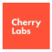
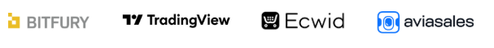
iTech Capital 6× TVPI · Gagarin Capital: MSQRD → Meta, Prisma · Cherry Labs exit, 2021
TVPI is mostly unrealized. The power law is the model, not a flaw.
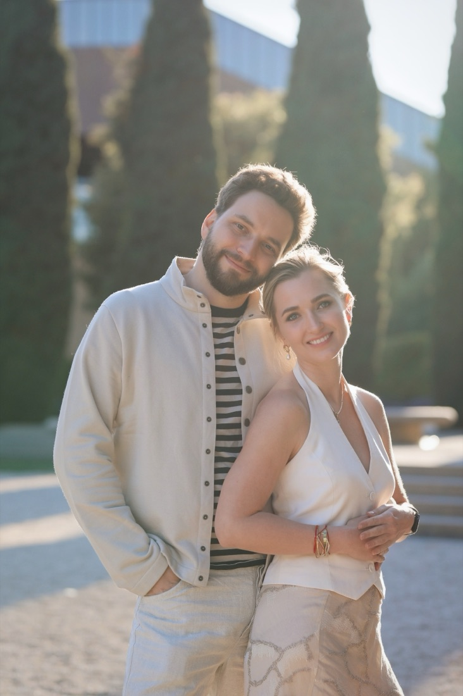
Lesson 1 · Founders
At seed the data is noise. The founder is legible.
A deck, a demo, an ARR number that changes weekly. Outliers are, by definition, the companies the data would have rejected.
- Has done it before. Technical. Obsessive about a real user.
- Energy when the market turns. Failed once and came back sharper.
- Repeat founders only, for five years.
Nick passed on Uber’s Series B.
Our edge is not a better model of companies. It is a better model of people, checked by 220 people who have worked with them.
Lesson 2 · Ownership
Being in the room at seed is a ticket, not a prize.
The prize is buying ownership when evidence appears, before the round is priced by someone else.
DVC AI Fund I is designed to pre-empt Series A/B.
Signals: Investor Competition and raise prediction. An AI memo before the first call; decisions in days.
Lesson 3 · Community
Community is repeated cooperation under shared incentives.
Not a mailing list. 220+ LPs: engineers, founders and angels, a third each; 94% immigrants. Carry is shared, 30–40% per deal.
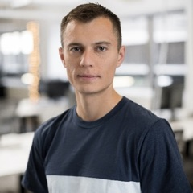
Denis YaratsFounder → LPPerplexity’s co-founder is now an LP in DVC AI Fund I.Deals are sourcing us. The State of AI report is a community product.
Lesson 4 · AI inside the fund
AI moved judgment to where it should live.
- Five analyst roles gone. Agents write the memo for under 30 cents.
- ~120 signals, raise prediction, and Ask2Task routing founder asks to the right LPs. Transparency builds trust.
- What cannot be automated: a founder’s state of mind at month eighteen, a co-founder argument, a company quietly dying.
Lesson 5 · Follow-ons and support
Relationship is measured, because it gets you the allocation.
- Support is operational: a “how can you help our startups” list in every LP letter, and Ask2Task.
- Years one and two KPIs: runway (~22 months) and survival.
- Pro-rata: negotiate it at the first check, hold it, use it. Unused pro-rata goes to active LPs.
Value per percent of ownership is the metric founders care about.
Lesson 6 · The job itself
Everything above is true and none of it makes the job calm. Bring life into the work.
Eight to ten deals a quarter, rounds that close in days, a market where a five-person team can go from zero to $300M ARR in a year. FOMO and anxiety are structural, not personal.
- Treat the anxiety as fuel.
- Choose the people.
- Bring life into the work: kids in founder offices, a company named after a dog, hikes, tea ceremonies, a fire-marshal fine at Mad Hats, twenty years working with your spouse.
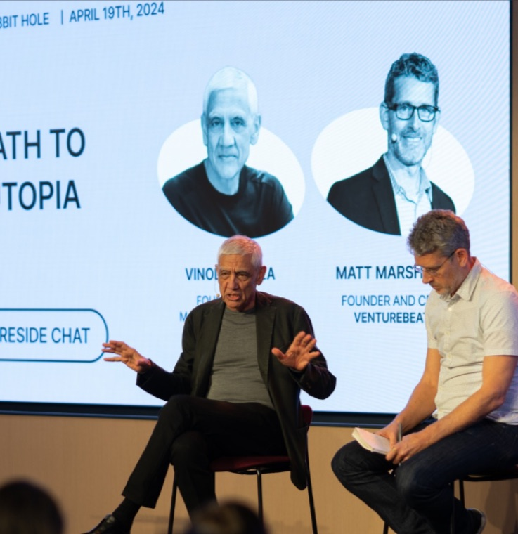
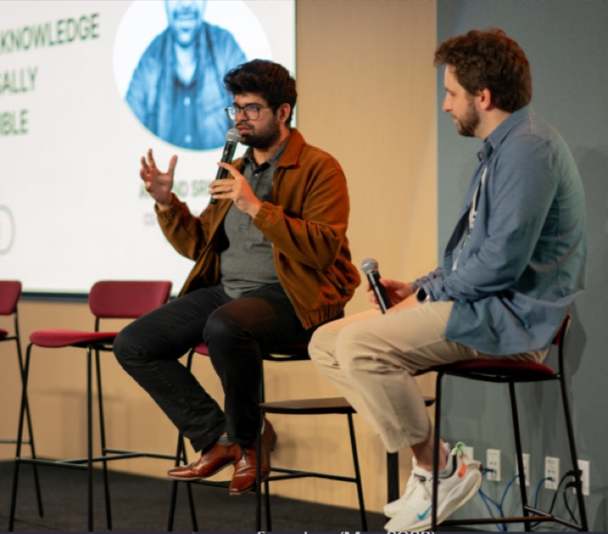
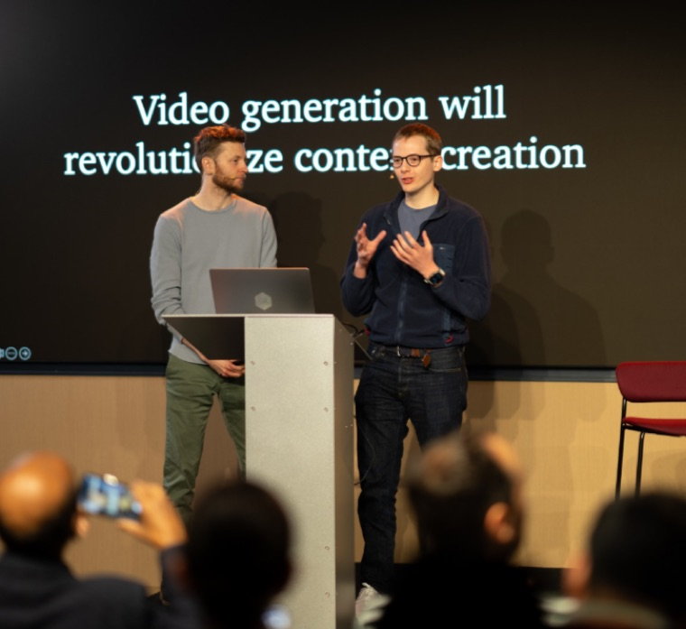
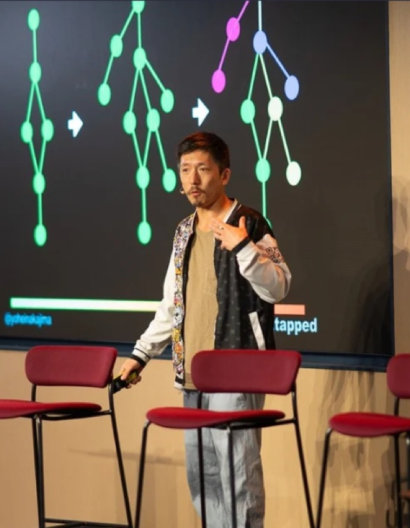
“Much harder at the beginning, much easier at the end.”
Where we look next
Distribution beats intelligence. Energy binds.
Underdeveloped, not undervalued: healthcare, industrial, robotics, construction.
The team
A team you count on two hands.
Repeat founders and operators, with AI doing the analyst work. Partners decide; the platform team builds the machine.
Platform & operations
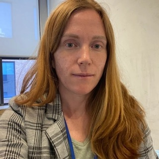
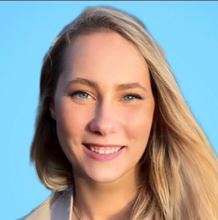
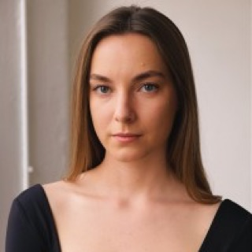
Two ways in
The door, and the follow-on engine.
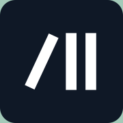
Kick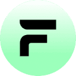
FleetWorks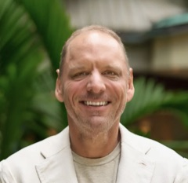
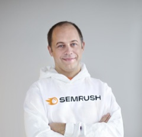
LPs include Arrington, Yarats, Shchegolev and FilevSelected portfolio companies; logos do not imply endorsement.
Thank you
Five years. Just getting started.
Next step: a 20-minute call.
Davidovs Venture Collective